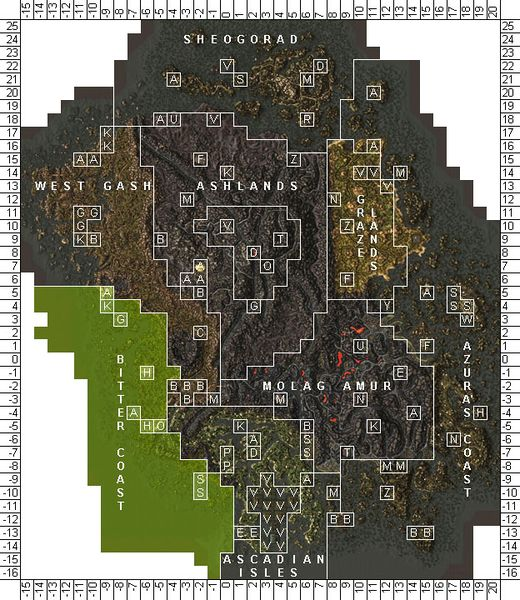
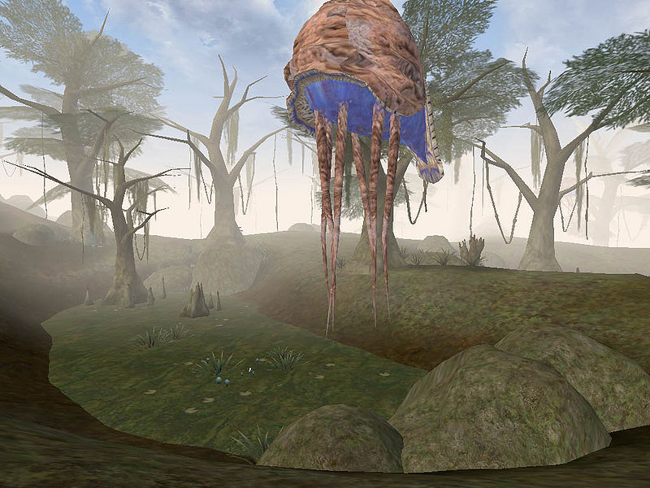
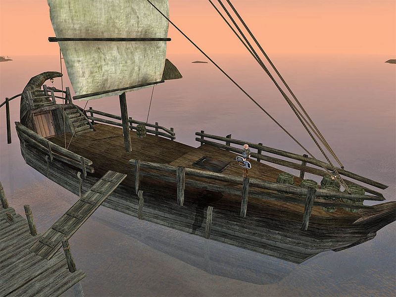
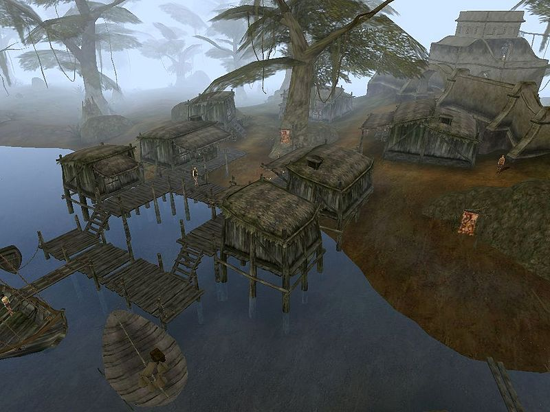

|
 Map of the Bitter Coast |
|
 A scene from the Bitter Coast, showing typical wildlife |
|
 The smuggler ship Grytewake |
|
 Gnaar Mok is a small, dilapidated fishing village |
The Bitter Coast, named for the salt marshes along the coast, is the part of Vvardenfell's coast nearest to the mainland of Morrowind. This largely uninhabited area is in the far southwest of Vvardenfell and lies between the mountains of the West Gash to the east and the Inner Sea to the west. The northern boundary of the region is generally considered to be marked by Khartag Point just north of Gnaar Mok, and it follows the coast south and eastward through the tiny fishing and smuggling village of Hla Oad and the Imperial outpost at Seyda Neen, finally merging into terrain more reminiscent of the Ascadian Isles just west of Vivec.
The Bitter Coast is dominated by humid, putrid swamps and salt marshes.
The giant bull netch float gently through the air, fearing no cliff racer or mudcrab.
Off the coast, divers find kollops with pearls, but even more slaughterfish and man-like
dreugh with their hard shells and tentacles. Herbalists come to this region to harvest
the various mushrooms which thrived in the marshy environment.
The region is also known as The Smuggler's Coast, since the secluded coves and islands are
littered with smugglers operating out of their hidden caves. The ever-present fog and
rain provide additional cover for their boats. No major action has been taken to curtail
their actions, as many smugglers count on support from locals unhappy with high taxes on liquor.
The Bitter Coast is a swamp, plain and simple.
Great, ragged trees provide a canopy beneath which pools of stagnant water grow a steady incursion
of green-brown moss. Local flora is replete with fungi including bungler's bane, hypha facia
and violet coprinus, and the stagnant pools can reward the strong-stomached with glowing ampoule pods.
Local fauna is mostly predatory, but not all that dangerous to the traveler. The few truly dangerous
creatures on the Bitter Coast are kwama foragers and nix-hounds, the latter of which are delicious and
useful for making potions.
The unwary traveler venturing into the open waters off the coast is in another league, however. The eternally persistent slaughterfish is thought by some to be a distant cousin to the cliff racer, as their temperament is very similar.